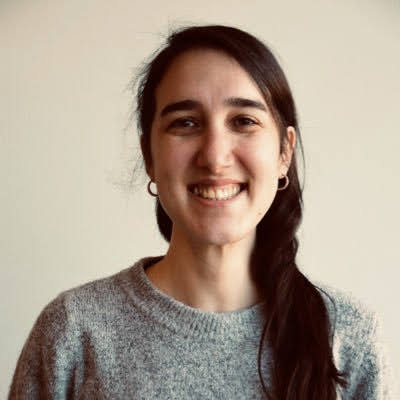

§ About
I am an Assistant Professor (Profesora Ayudante Doctora) in the Department of Social Sciences at Universidad Carlos III de Madrid (UC3M). My work lies at the intersection of politics and forced migration, concentrating on three areas: (1) migration diplomacy and refugee commodification through international relations, (2) everyday politics of forced migration with a focus on political behaviour and attitudes, and (3) anti-immigrant political parties in the Global South.
Before joining UC3M, I was a Postdoctoral Research Fellow and later an Associate Researcher in the Global Politics and Security Programme at the Swedish Institute of International Affairs (UI). I hold a Ph.D. in Political Science from the University of Gothenburg (Sweden). I also hold an M.A. in International Affairs from the Elliott School of International Affairs, George Washington University (Washington, D.C.), and a B.A. in Political Science and International Relations from Boğaziçi University (Turkey).
§ Peer-Reviewed Publications
Most recent first. Click a title for details. See the CV for the complete list, including book chapters, policy briefs, and opinion articles.
-
This paper examines refugee hubs that attract heightened scrutiny and opportunities for integration. Focusing on Turkey, we argue these hubs offer a sense of protection and expose refugees to increased control by authorities. Thus, we introduce the concept of collective hypervisibility to analyse how Syrian refugees in two Turkish hubs articulate and perceive their lived experiences through both positive and negative perspectives as a group. Refugees often view these neighbourhoods as shields from typical integration challenges faced by newcomers. However, living in such spaces also renders them targets, as all refugees are perceived as a homogeneous group, ignoring individual differences. By exploring refugee perceptions, we reveal shared dynamics across refugee hubs and offer insights relevant to similar contexts globally.
-
Refugee commodification, or the use of refugee hosting to extract political and economic concessions, has attracted growing scholarly attention in recent years. Yet, studies tend to focus on its international component, neglecting the domestic political space and how these extractions impact domestic political dynamics. To address this gap, we ask: how does refugee commodification influence domestic politics? Our study focuses on the Republican People’s Party (CHP) in Turkey, in order to assess the political implications of refugee commodification within domestic politics. Through a mixed qualitative approach using semi-structured interviews with opposition politicians and an analysis of policy documents, we examine the nexus of international and domestic spheres, assessing how political actors beyond the ruling Justice and Development Party (AKP) engage in, react to, and employ refugee commodification strategies. The findings of this study have implications beyond Turkey, demonstrating the transformative effects of refugee commodification for domestic politics across Global South states.
-
Some host community members (HCMs) develop positive attitudes toward refugees, while others do not. The current literature on perceptions of refugees offers different explanations for these varied responses to intergroup encounters (positive contact, negative contact, and exposure). Nevertheless, few scholars have examined the outcomes of intergroup relations at the microlevel to better understand the various impacts of intergroup encounters between HCMs and refugees. Even fewer scholars have focused on the everyday implications of HCMs’ attitudes toward refugees in response to changing local demographics. In this article, I argue that in addition to the type of intergroup encounters, the locations where these encounters occur at the neighborhood level serve as a critical factor in understanding HCMs’ sociospatial attitudes or their attitudes toward refugees at the microlevel of everyday life. In doing so, I introduce the concept of "everyday strategies" to describe the sociospatial attitudes that HCMs adopt in different types of urban public spaces following their encounters with refugees in neighborhoods that have experienced a large refugee influx. Empirically, the analysis draws on interviews conducted with 60 HCMs in Bursa, Turkey, in 2018 and, through the concept of everyday strategies, extends the literature on HCMs’ attitudes regarding refugees. Overall, this article contributes to the wider study of international migration by detailing the influence of microlevel intergroup encounters on HCMs’ sociospatial attitudes in a South-South forced migration context.
-
The reception of Syrian refugees has dominated negotiations between neighbouring host states, such as Jordan and Turkey, and donors in the Global North. Despite the growing literature on external funding, how international stakeholders navigate the domestic context is understudied. This article employs the lens of depoliticisation and analyses tools employed by international stakeholders manoeuvring domestic contexts in centralised states. We argue that international stakeholders adopt a depoliticised approach that portrays them and the actors they work with as service providers while working with national governments that engage in rent-seeking. Drawing on semi-structured interviews with donors and international non-governmental organisations (INGOs) as international stakeholders in Jordan and Turkey, the contribution of the article is two-fold. First, although the ‘local’ is ever present in policy and research discussions, research and policy often conflate regional organisations, national governments and municipalities. We therefore further disentangle the power relations between the various actors categorised as ‘local’. Second, we offer a conceptual understanding of how international stakeholders navigate the dynamics of local power relations and the domestic politics in centralised states with rent-seeking behaviours.
-
How do refugees perceive the regulations of government officials in their neighbourhoods? To answer this question, I introduce the concept of "everyday regulations" and define it as all practices, formal and informal, implemented by local authorities to manage, organise, and control refugees’ daily lives within neighbourhood spaces. I support my concept with an empirical analysis based on 40 semi-structured interviews with Syrian shop owners and shop workers in Bursa, Turkey, conducted in September and October 2019. I analyse perceptions related to two types of everyday regulations: (1) Syrian shop visits by the municipal police (Zabıta) and (2) handouts distributed in the neighbourhood by the provincial directorate of security (Emniyet Müdürlüğü). My findings reveal that Syrian shop owners perceive everyday regulations as both discriminatory and acceptable. Those with discriminatory perceptions assess these regulations in terms of exclusionary treatment by local authorities, while those whose perceptions label encounters with government officials as acceptable associate these interactions with learning Turkey’s customs and laws. By detailing the differences in refugees’ perceptions of local refugee governance, this study unveils potential explanations for why some local refugee policies are perceived better than others.
-
What is field research? Is it just for qualitative scholars? Must it be done in a foreign country? How much time in the field is “enough”? A lack of disciplinary consensus on what constitutes “field research” or “fieldwork” has left graduate students in political science underinformed and thus underequipped to leverage site-intensive research to address issues of interest and urgency across the subfields. Uneven training in Ph.D. programs has also left early-career researchers underprepared for the logistics of fieldwork, from developing networks and effective sampling strategies to building respondents’ trust, and related issues of funding, physical safety, mental health, research ethics, and crisis response. Based on the experience of five junior scholars, this paper offers answers to questions that graduate students puzzle over, often without the benefit of others’ “lessons learned.” This practical guide engages theory and praxis, in support of an epistemologically and methodologically pluralistic discipline.
-
This article contributes to the debates on positionality in migration studies by introducing "assigned insider" as a new category. I define it as a position when both the interviewees and the researcher are of the same local origin in which the researcher is considered ‘an insider of the host community’ and the interview questions are about a migrant group. I developed this category based on interviews with host community members during my field study in Bursa, Turkey, where I was born and raised. Previous studies focused on the researcher being an insider from a migrant community or being an outsider conducting research on a migrant community different from his/her own. Assigned insider has two elements that require it to be considered differently: same local origin operates as an overriding feature that goes beyond ethnicity and the interviewees being from the host community involves different ethical aspects than that from a migrant community. I argue that these reflect on the researcher during the interviews through active and passive discontent manifestations of the interviewees. While the former emphasises the direct confrontations of the interviewees that lead them to ‘correct’ the researcher, the latter manifests itself through non-verbal ways, which can result in refraining from answering questions.
-
This article aims to produce an analysis of the politicization of the citizens after Spain’s Indignados movement from a citizenship framework. The article suggests that claiming the right to the city involves more than issues of access to urban amenities: it is also about claiming the right to participate in the formation and transformation of the city and the right to appropriate the city center. This positions these rights within the larger issue of citizenship by defining it as a collective practice rather than a state-sanctioned status. Our analysis is based on the empirical evidence derived from the semi-structured interviews, politicians’ speeches, information based on media resources and official websites, and participant observation during three months of fieldwork in Barcelona in 2016.
-
This paper analyses the response of the Municipality of Barcelona to the Syrian refugee crisis in Europe as an alternative solution that challenges the national government’s restrictive approach. This response introduces the Ciutat Refugi Plan with a city-to-city network at the municipal level that involves other European cities in creating safe routes for refugees at the local government level. In line with multi-level governance theory, I argue that central governments’ inaction has pressured local governments to take action during the Syrian refugee influx. Relying on the influence of local government networks, the Municipality of Barcelona uses discourse as a tool of action in opening discursive spaces for humanitarian political responses to the refugee crisis. Using critical discourse analysis, I test this argument by examining in-depth interviews, speeches of people in power that have appeared in news articles, and statements on official websites.
§ Teaching
See the CV for the complete list.
Universidad Carlos III de Madrid
- Graduate Introduction to Sustainable Development and Global Governance · Co-instructor · Fall 2026
- Undergraduate Supranational Integration Processes · Instructor · Fall 2025, 2026
- Undergraduate International Politics · Instructor · Fall 2026
- Undergraduate Global Policy Issues · Instructor · Spring 2026
- Undergraduate Corruption and Accountability · Instructor · Fall 2025
Södertörn University, Stockholm, Sweden
- Graduate Global Governance · Instructor · Fall 2022
- Graduate Organising European Space · Instructor · Fall 2022